Humanfab Workcare
Application mobile de prévention au travail.
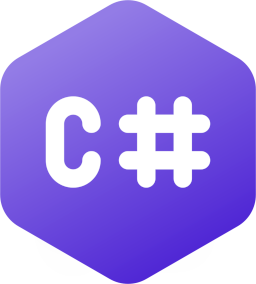
Application mobile de prévention au travail.

Mon portfolio en ligne.
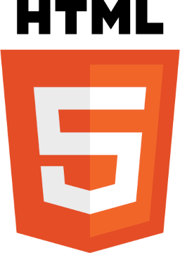
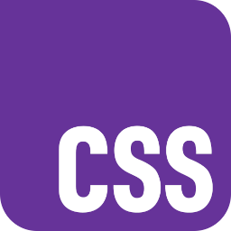
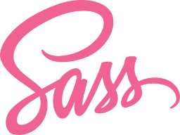
Un algorithme qui génère l'ensemble de Mandelbrot.
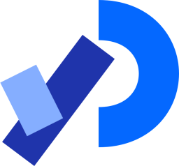
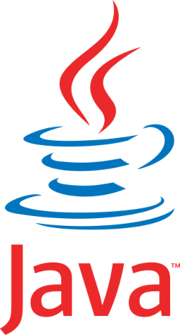
Un algorithme de simulation de sable à l'aide d'un automate cellulaire.
Un clone du jeu du démineur.
Un jeu snake dans le terminal.
Une application pour gérer et participer à l'évènement des 60 ans de l'IUT2 de Grenoble.
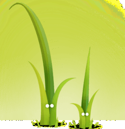
Une interface de récolte de données dans le cadre des échecs de service en B2B.
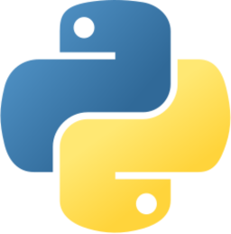
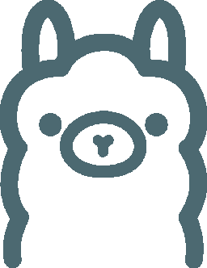
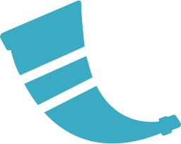
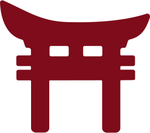
Humanfab Workcare est une solution proposée aux entreprises afin que les employés puissent rester en bonne santé en proposant des séance de sport sur mesure.
Nous étions une équipe composée de 5 à 7 personnes, comprenant un designer, des développeurs front-end et mobile et moi-même, un développeur back-end
J'ai travaillé sur l'API en gérant le système d'authentification, et en développant différents algorithmes, tels que la génération de profils types en fonctions des données de santé de chaque utilisateurs, la génération de séance de sport en fonction de ces profils et le calcul de différentes statistiques à destination d'un dashboard.
Le back-end est développé en C# dans l'environnement .NET.
Dans le cadre de mes études et afin de pouvoir montrer mes compétences à mes futurs employeurs, j'ai conçu et développé un portfolio en ligne.
J'ai effectué toute la gestion de projet, en commençant par l'analyse de l'existant, puis par la définition des personnas. De là j'ai pu déterminer tout ce qui devait se trouver dans mon portfolio. S'en ai suivi la définition des risques et contraintes ainsi que la planification.
Le projet a été développé en HTML / CSS à l'aide de SASS avec la syntaxe SCSS, et le formulaire de contact ainsi que l'envoie de l'email est traité avec PHP.
Les fractales sont un concept qui m'a toujours faciné. J'ai donc naturellement choisi de créer un algorithme qui génère la plus emblématique des fractales : « l'ensemble de Mandelbrot ».
La génération et la visualisation de l'ensemble est gérée par Processing.
C’est un projet personnel nait de ma curiosité des automates cellulaires. L’utilisation du bon jeu de règles pour cet automate a donné une simulation de sable, en imaginant que chaque cellule est un grain de sable.
La simulation et la visualisation est gérée par Processing.
C'est un clone du jeu du démineur. Ce qui m'a paru intéressant, c'est l'utilisation d'un algorithme récursif afin de dévoiler les cases vides lors d'un clic sur l'une d'entre elles.
Le jeu et la visualisation est gérée par Processing.
C'est un jeu snake dans le terminal. Je voulais apprendre le langage de programmation Rust car je trouve sa conception interressante, en effet il est conçu pour être performant et fiable, il est réputé pour ne pas utilisé beaucoup de mémoire et possède un système d'«ownership» garantissent la sécurité mémoire ainsi que la sécurité des threads. J'ai donc créé un jeu bien connu avec pour en apprendre les fondamentaux.
Le jeu est exécuté dans un terminal et se joue au clavier.
Dans le cadre de mon BUT informatique, nous avons du concevoir et développer une application permettant de gérer et participer à l'évènement des 60 ans de l'IUT2 de Grenoble.
Nous étions une équipe de trois développeurs, je me suis occupé de la partie backend, mon collaborateur s'est occupé de la partie frontend et administration système et ma collaboratrice a assumé le rôle de chef de projet et a porté son aide sur la partie frontend. Nous avons développé cette application en 6 semaines.
L'application web est développée avec le framework PHP : Symfony. Le système de gestion de la base de données est PostgreSQL. L'interface est en HTML avec l'intégration de Twig et CSS.
C'est une interface de récolte de données sur les échecs de service en B2B. Dans le cadre de sa thèse, Perrine de Martel, réalise une étude sur les échecs de service en B2B et l'utilisation des IA génératives lors des échanges entre le client et son prestataire. Pour les besoins de l'étude et l'accessibilité, l'interface prend la forme d'une application web.
Nous étions une équipe de deux développeurs, je me suis occupé de la partie backend, tandis que mon collaborateur s'est occupé de la partie frontend. Nous avons développé cette application en 8 semaines au laboratoire Coactis de l'Université Lumière Lyon 2.
L'application web est développée avec le framework Python : Flask. La base de données est intégrée avec l'ORM SQLAlchemy. L'interface est en HTML avec l'intégration de Jinja2 et CSS.